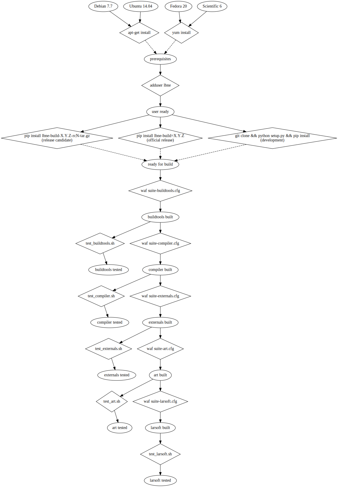

The big picture
This document tries to describe high-level goals and design for the lbne-docker package.
This package implements an automated workflow for building LBNE software based on Docker. It is not required for building the LBNE software stack as that is handled by the package lbne-build. What lbne-docker provides is a higher layer of automation and build configuration management. It is used to produce well characterized (Linux) platforms on which lbne-build may run in a well reproduced manner and then to drive lbne-build itself.
The workflow of lbne-docker is cartooned in the graph below. Ovals are file system states and diamonds are sketches of the commands that transition between their attached states. Transitions with commands that have a dashed arrow indicate that the state reached is effectively identical depending on which command is used to reach it. In practice they are not identical and thus indicate a branch variation that must be selected for when the workflow is actually processed.
To first order, this workflow is linear starting with an base OS image and ending at a working LBNE software stack. But, as is shown, it actually contains some branch variation and some parameters (base OS, lbne-build version and installation method). It also has off-shoots for intermediate testing. When the workflow is exercised one must pick a single path through it and to specify the parameters. These variations are reduced somewhat.
The base-OS variations are minimized by installing a set of OS-level packages. The contents (and their "spelling") depend on the base-OS and the version of lbne-build. Once installed, the resulting state is largely OS-independent. Residual differences must be handled by lbne-build and the individual package-level build methods that it drives.
Independent (in detail) from the lbne-build version there are several installation methods for lbne-build itself that are accommodated. These include:
- official release
- install via a versioned download from PyPI
- release candidate
- install via a locally-built python package (tar file)
- development
- install via
git clone
Because of the way lbne-build is implemented as a "standard" Python package, all three result in effectively the same file-system state.
Then, lbne-build itself is responsible for building the non-OS parts of the LBNE software stack. This progresses serially through the defined Worch (waf) "groups". These group definitions are exposed by the lbne-build Worch configuration as a series of software "suites", each encompassing the prior. This allows for break points to be defined and early testing to be inserted. The lbne-docker workflow is configured to run or ignore these side branches. If run, they must succeed before continuing to the next build group.
